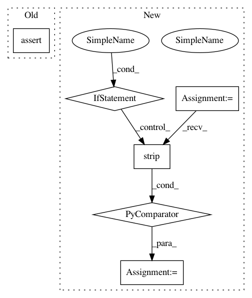

21d06b0d0cfd47e7b420ad9dac95fc6d634a083e,tests/meta/test_regressor_chains.py,,test_regressor_chains,#,13
Before Change
" warm_start=False),\n" \
" order=None, random_state=112)"
assert learner.get_info() == expected_info_0 or learner.get_info() == expected_info_1
After Change
expected_info = "RegressorChain(base_estimator=SGDRegressor(max_iter=10, random_state=112), " \
"order=None, random_state=112)"
info = " ".join([line.strip() for line in learner.get_info().split()])
assert info == expected_info
In pattern: SUPERPATTERN
Frequency: 3
Non-data size: 6
Instances
Project Name: scikit-multiflow/scikit-multiflow
Commit Name: 21d06b0d0cfd47e7b420ad9dac95fc6d634a083e
Time: 2020-05-17
Author: saulomastelini@gmail.com
File Name: tests/meta/test_regressor_chains.py
Class Name:
Method Name: test_regressor_chains
Project Name: commonsense/conceptnet5
Commit Name: 79d149dd39dc7e7d22c623c0a4a4d3ab99e61c76
Time: 2017-06-15
Author: joanna.teresa.duda@gmail.com
File Name: conceptnet5/vectors/transforms.py
Class Name:
Method Name: choose_small_vocabulary
Project Name: tensorflow/transform
Commit Name: 98e2f714e54b761c0a1954ad50a26010c7ef50d9
Time: 2018-09-24
Author: tf-transform-dev@google.com
File Name: tensorflow_transform/beam/tft_unit.py
Class Name: TransformTestCase
Method Name: assertAnalyzeAndTransformResults